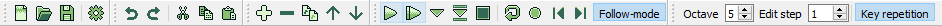
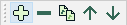
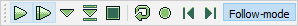
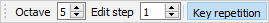

Toolbars
This page explains all toolbars used in the application.

Each toolbar can be docked on either side of the main window, or can be left floating anywhere on screen. By default all toolbars are position at the top of the window.
Visibility of each toolbar can be toggled by clicking its corresponding menu action in the View > Toolbars menu.
You can also reset the layout of all toolbars by clicking the View > Reset layout menu action.
File toolbar
Contains actions from the File menu.
New | Open | Save | Configuration
Edit toolbar
Contains actions from the Edit menu.
Undo | Redo | Cut | Copy | Paste
Song toolbar

Contains actions from the Song menu.
Insert order row | Remove order row | Duplicate order row | Move order up | Move order down
Tracker toolbar

Contains actions from the Tracker and Module menus.
Play | Play from start | Play at cursor | Step row | Stop | Pattern repeat | Record | Previous song | Next song | Follow mode
Input toolbar

- Octave - Base octave used when entering notes. Default is 5.
- Edit step - Amount of rows the editor steps down to when entering data. Default is 1.
- Key repetition - If enabled keys will be repeated when held down. Key repetition is enabled by default.